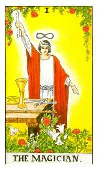
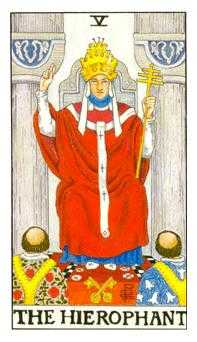
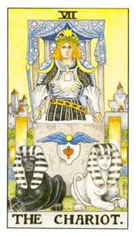
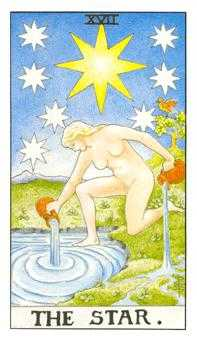

Bîrsan Daniel Robert — 19.02.1998
Date generale
- Persoana analizată: Bîrsan Daniel Robert
- Prenume activ: Daniel
- Data nașterii: 19.02.1998
- Gen: masculin
- Nume anterior: nu există
- Template selectat: scurt
- Stil de redactare: conversațional
- Interval analizat: 0–108 ani
- Data lucrării: 18.07.2026
- Versiune: V1.00R
- Relație analizată: Roman Andreea Maria, 12.01.1998, parteneră
Cuprins
- Vibrația interioară — Cine ești tu?
- Vibrația exterioară — Rolul social
- Destinul — Muntele de urcat
- Matrița numerologică — Pătratul lui Pitagora
- Numele — Eu și neamul
- Spirit și karmă — Lecții și direcții de maturizare
- Pinacluri: Oportunități și provocări
- Ciclicități
- Relații
- Aplicabilitate profesională
- Concluzii
Capitolul 1. Vibrația interioară — Cine ești tu?
1.1. Definiție
Daniel, vibrația interioară vorbește despre desăvârșirea caracterului și descrie natura ta lăuntrică: cine ești când nu te vede nimeni și nu trebuie să răspunzi așteptărilor din exterior. Ea arată cum primești și interpretezi ceea ce vine către tine, ce îți dorești cu adevărat, ce simți și cum înveți. De aici pornesc motivațiile și reacțiile tale autentice. Cunoscând această vibrație, îți poți recunoaște mai ușor punctele forte, slăbiciunile și direcțiile în care ai nevoie să te dezvolți.
1.2. Caracterul
Daniel, tu ai vibrația interioară 1: inițiativă, autonomie și nevoie de direcție proprie. Traseul spune însă mai mult. 1 aduce pornirea, iar 9 aduce experiența și imaginea largă; împreună formează 10, pragul dintre încheiere și un nou început. În 10, 1 pornește, iar 0 reprezintă totul și nimicul: poate mări potențialul lui 1 sau îl poate anula atunci când energia nu primește o direcție clară. De aceea, forța ta crește atunci când alegi limpede înainte să accelerezi.
1.3. Dorințele
Îți dorești libertatea de a decide și satisfacția de a vedea că o idee capătă formă. Nu ai nevoie să conduci orice situație; ai nevoie să simți că vocea ta contează și că poți iniția ceva autentic.
1.4. Motivația
Te motivează provocările în care poți deschide un drum, simplifica o problemă sau transforma o intenție într-un prim pas. O rutină utilă pentru tine este să alegi dimineața o singură acțiune care pune ziua în mișcare.
1.5. Teama
Umbra lui 1 este teama de dependență, control sau pierderea autonomiei. Ea poate produce grabă ori încăpățânare. Antidotul nu este renunțarea la inițiativă, ci verificarea: „Am decis limpede sau doar reacționez?”
1.6. Polarități și maturizare
| Polarități pozitive |
|
|---|---|
| Polarități negative |
|
| Direcții de dezvoltare |
|
1.7. Tarot
Index: BDR-19980219-v1.00r-G-001  Arcana 1 — Magicianul |
|
Capitolul 2. Vibrația exterioară — Rolul social
2.1. Definiție
Vibrația exterioară descrie felul în care te manifești în lume: prezența, comportamentul vizibil, imaginea socială și modul în care ceilalți îți pot percepe energia. Dacă vibrația interioară arată dinamica ta privată, vibrația exterioară arată forma prin care aceasta devine vizibilă în relații, contexte sociale și situații concrete. Ea nu spune totul despre caracter, dar indică stilul tău de apariție, reacția spontană în exterior și felul în care îți proiectezi energia. Citește-o ca pe o poartă de contact cu lumea: poate confirma vibrația interioară sau poate crea un contrast între ceea ce trăiești înăuntru și ceea ce observă ceilalți.
2.2. Caracterul social
Vibrația exterioară 2 se vede prin atenție, receptivitate și capacitatea de a simți atmosfera dintre oameni. În contexte sociale, ceilalți pot observa diplomație, cooperare și grijă pentru ritmul comun. Sensibilitatea devine o resursă când te ajută să alegi cuvântul potrivit, dar are nevoie de limite clare ca să nu se transforme în ezitare sau adaptare excesivă.
2.3. Interior și exterior
Daniel, dacă în interior ești 1, la exterior oamenii te pot percepe ca pe un 2. Înăuntru există impulsul de a porni, de a decide și de a urma o direcție proprie; în exterior poți apărea mai atent, cooperant și dispus să ajuți. Asta nu înseamnă că una dintre vibrații o anulează pe cealaltă. 1 îți dă inițiativa, iar 2 te ajută să o exprimi fără să pierzi legătura cu oamenii. Practic, poți spune clar „eu pornesc”, apoi să adaugi firesc „hai că te ajut” sau „hai să construim împreună”.
Puntea dintre interior și exterior arată distanța dintre ceea ce ești și simți în spațiul tău lăuntric și felul în care această energie devine vizibilă în relația cu lumea. Ea nu anulează niciuna dintre vibrații, ci indică ajustarea necesară pentru ca interiorul și exteriorul să poată lucra împreună. Pentru tine, Daniel, puntea arată cât de ușor poate inițiativa lui 1 să se exprime prin sensibilitatea și cooperarea lui 2.
Rezultatul 1 arată că între nucleul tău interior și imaginea proiectată în exterior există o diferență mică, dar importantă: tu pornești din inițiativă și autonomie, iar ceilalți te pot întâlni mai întâi prin cooperare și atenție. Autenticitatea este cheia acestei punți. Când ceea ce spui și ceea ce faci pornesc dintr-o direcție asumată, cei din jur te pot privi și accepta ca pe un lider, fără ezitare și fără dubii. Cu cât îți exprimi mai clar intențiile și păstrezi loc pentru dialog, cu atât deschizi calea și transformi pornirea personală într-o influență pozitivă asupra celor din jur.
Capitolul 3. Destinul — Muntele de urcat
3.1. Definiție și calcul
Destinul sintetizează data completă și arată o direcție de maturizare, nu un eveniment obligatoriu. Pentru destin păstrăm accentul pe rezultatul final.
3.2. Interpretare
Daniel, rezultatul intermediar 12 arată că direcția ta se construiește prin întâlnirea dintre 1 și 2: 1 pornește, formulează intenția și își asumă inițiativa, iar 2 răspunde „hai că te ajut”, aducând cooperare, sensibilitate și atenție la ritmul celuilalt. Lecția lui 12 este să nu alegi între autonomie și colaborare, ci să le pui la lucru împreună. Când reducem 1 + 2, ajungem la rezultatul final 3, iar această combinație capătă voce, expresie și creativitate. Destinul 3 te cheamă să comunici, să creezi, să explici și să aduci mișcare acolo unde lucrurile au devenit rigide. Umbra poate fi dispersia sau promisiunea fără continuare; maturizarea apare când ideea primește formă. În practică, pornește de la o intenție clară, cere contribuția potrivită și încheie ciclul prezentând concret ceea ce ai creat.
Capitolul 4. Matrița numerologică — Pătratul lui Pitagora
4.1. Matricea datei de naștere
Matricea pornește de la cifrele datei de naștere și de la cele patru numere de lucru. Ea arată ce energii îți sunt deja la îndemână și unde ai nevoie de aport din experiență, relații sau exercițiu. Privind pătratul tău, vei observa că unele căsuțe sunt pline, iar altele goale: cele pline indică resurse ușor de accesat, iar cele goale arată direcții care se construiesc conștient. Cele 9 căsuțe pot fi privite ca nouă computere energetice sau sfere de inteligență:
- Căsuța 1 — inteligența psihică;
- Căsuța 2 — inteligența emoțională;
- Căsuța 3 — inteligența prelucrării informațiilor;
- Căsuța 4 — inteligența corporală;
- Căsuța 5 — inteligența intuitivă;
- Căsuța 6 — inteligența pragmatismului;
- Căsuța 7 — inteligența spirituală;
- Căsuța 8 — inteligența puterii și inteligența socială;
- Căsuța 9 — inteligența mentală.
Fiecare sferă înseamnă mult mai mult decât această scurtă descriere; important este să îți folosești conștient resursele și să construiești echilibrat zonele mai puțin active.
Căsuța 1. Reprezintă psihicul, caracterul, ego-ul, spiritul de inițiativă, pionieratul, independența, unicitatea, calitatea de conducător și individualitatea. Ai 4 apariții față de optimul de 3, deci energia este activă și disponibilă peste reper, dar nu în exces. Ai un motor puternic de pornire; cheia este să îl folosești fără să transformi hotărârea în presiune sau rigiditate.
Căsuța 3. Evidențiază capacitatea omului de a crea și a menține relații, networking-ul, curiozitatea celui care cercetează, face sinteza informațiilor și le oferă celorlalți, precum și acțiunile eficiente, concentrate pe rezultat, spiritul entuziast și bucuria de a trăi exprimată deschis. Ai 2 apariții față de optimul de 3, astfel că această energie are nevoie de exercițiu. Conversațiile sincere, oamenii diferiți și contexte în care îți spui ideile îți completează această resursă.
Căsuța 4. Reprezintă corpul fizic, sănătatea corpului, spiritul practic, orientarea spre rezultate concrete, organizarea, cadrul, trăinicia, statornicia și temeinicia. Căsuța este absentă față de optimul de 2, iar această energie cere aport extern conștient: mișcare, somn, hrană regulată și rutină. Corpul devine aliat când îi oferi consecvență, nu doar când îi ceri să țină pasul cu mintea.
Căsuța 5. Reprezintă libertatea, stima de sine, imunitatea sistemică, nonconformismul — ieșirea din pătrat — spiritul de aventură, oportunismul și curajul. Căsuța este absentă față de optimul de 2, iar această energie se construiește prin pauze, observarea semnalelor subtile și verificarea deciziilor înainte de acțiune.
Căsuța 6. Reprezintă iubirea ca ocrotire, instinctele, arta, realismul și pragmatismul. Lipsa cifrei 6 din Pătratul lui Pitagora poate vorbi despre o manifestare oscilantă sau extremistă în raport cu sexualitatea, pragmatismul, oportunitățile, banii, familia și echilibrul. Aportul extern se construiește prin organizare, responsabilități clare și obiceiuri repetabile care transformă intenția în rezultat.
Căsuța 7. Reprezintă capacitatea omului de a observa, de a analiza, de a studia și de a experimenta, de a găsi cele mai bune soluții și de a face legătura dintre știință și duh. Este energia omului vizionar și a înțeleptului. Ai exact 1 apariție, adică optimul acestei căsuțe; folosește timpul de liniște ca să alegi limpede, nu ca să te retragi din contactul cu lumea.
Căsuța 8. Reprezintă puterea, responsabilitatea, spiritul de sacrificiu, elitismul, măiestria — performanța — ambiția, succesul în afaceri și în poziții de putere, precum și patriotismul. Ai exact 1 apariție, adică optimul acestei căsuțe. Această energie te ajută să gestionezi responsabilitatea și rezultatul, atât timp cât rămâi echitabil și nu preiei mai mult decât îți aparține.
Căsuța 9. Reprezintă inteligența, compasiunea, altruismul, finalizarea, transformarea, înnoirea, adaptarea, orientarea către idealuri înalte, învățarea și predarea cunoștințelor la nivel superior. Ai 4 apariții față de optimul de 1, deci energia mentală este în exces. Memoria, analiza și viziunea sunt foarte intense; selectează prioritățile și creează pauze, ca mintea să rămână un instrument, nu o sursă de suprasolicitare.
4.3. Elemente și temperament
- Focul este esența vieții, a duhului și a spiritului care animă și activează.
- Pământul este esența materiei dense, a solidarității și a fertilității; hrănește și dă formă.
- Aerul este esența inteligenței conceptuale, care eliberează și stimulează.
- Apa este esența emoțiilor și a fecundității; face lucrurile maleabile și flexibile și susține acumularea.
Temperamentul tău predominant este coleric, deoarece Focul are totalul cel mai mare: 8 apariții, față de Aer cu 3, Apă cu 2 și Pământ cu 1. Asta se vede prin inițiativă, reacție rapidă și nevoia de a porni lucrurile. Ca energia ta să rămână constructivă, dă-i o direcție clară și susține-o prin ritm, pauze și colaborare.
4.4. Masculin și feminin
Matricea are 11 apariții impare și 3 pare. Cifrele pare susțin capacitatea de a primi și de a da mai departe; când devin foarte numeroase, pot aduce și indecizie. La tine ele există, dar nu domină: energia de inițiere, proiectare și decizie este mai puternică decât energia de receptare și stabilizare. Daniel, asta nu înseamnă că trebuie să fii permanent „în atac”, ci că ai nevoie să înveți deliberat pauza, cooperarea și ritmul corpului.
4.5. Daruri și nevoi
Darurile și nevoile se citesc numai din căsuțele cu cel puțin 2 cifre. La tine, acestea sunt 1, 2, 3 și 9. Ca daruri, ele susțin inițiativa, sensibilitatea relațională, exprimarea și forța mentală. Ca nevoi, aceleași energii cer autonomie pentru 1, siguranță emoțională și cooperare pentru 2, dialog și relații vii pentru 3, respectiv sens, învățare și un orizont mai înalt pentru 9. Căsuțele cu o singură cifră și cele goale nu intră în lectura darurilor și nevoilor; ele se citesc separat, prin potențialul disponibil sau direcția de dezvoltare.
4.6. Scara bunăstării
Scara bunastarii pune în ordine descrescatoare valorile vectorilor și ale casutelor. Ea arată unde exista acumulare mare de energie și unde apar trepte slabe sau absente. În lectura ta, varful este vectorul 789, urmat de 369 și 159, deci mintea, viziunea, exprimarea și orientarea spre rezultat sunt foarte active. La baza apar 456 și căsuțele 4, 5 și 6 cu valoare 0, ceea ce confirma aceeasi lecție: bunastarea creste când energia mentala și creativa este sprijinita de corp, disciplina, centru și responsabilitate concretă.
Capitolul 5. Numele — Eu și neamul
5.1. Numărul activ
Numărul activ este influența directă a numelui folosit zi de zi asupra comportamentului curent. El arată ce energie aduce numele în reacțiile tale obișnuite, în felul în care intri într-un context și în impresia pe care o susții prin acțiunile repetate.
Daniel, Numărul tău activ este 9 și îți aduce un aport de viziune, compasiune, capacitate de sinteză și orientare către sens. În comportamentul de zi cu zi, poți vedea imaginea de ansamblu, poți înțelege ușor mai multe puncte de vedere și poți transforma experiența în concluzii utile pentru ceilalți. Resursa lui 9 este maturitatea de a încheia, de a ierta și de a ridica discuția deasupra interesului imediat. Defectele apar când devii prea detașat, moralizator sau dezamăgit de ritmul oamenilor: poți cere mult, poți evita detaliile concrete ori poți închide o etapă înainte ca ceilalți să fi înțeles ce se întâmplă. Păstrează viziunea mare, dar spune clar ce ai nevoie și ce pas concret urmează.
5.2. Numărul intim
Numărul intim se calculează din vocalele numelui complet și descrie motivația afectivă, dorințele profunde și ceea ce îți hrănește lumea interioară. Dacă Numărul activ arată energia cu care intri în viața de zi cu zi, Numărul intim arată vocea mai discretă care îți spune ce are sens pentru tine.
Numărul intim 9 caută sens, înțelegere și o perspectivă mai largă decât interesul imediat. Te poate face receptiv la nedreptate, atent la experiențele celorlalți și motivat să închei lucrurile cu demnitate. Umbra apare când preiei prea mult din greutatea lumii sau când idealul devine atât de înalt încât realitatea pare mereu insuficientă. Maturizarea înseamnă să păstrezi compasiunea, dar să alegi concret unde îți investești energia.
5.3. Numărul ereditar
Numărul ereditar 9 aduce o memorie de neam legată de sens, finalizare și responsabilitate. Păstrează înțelepciunea utilă, dar nu purta automat fiecare povară a trecutului.
5.4. Numărul ereditar karmic
Numărul ereditar karmic arată o memorie simbolică a neamului și felul în care poți continua conștient resursele lui, fără să preiei automat limitele sau poverile transmise.
Index: BDR-19980219-v1.00r-G-003  Arcana 5 — Marele Preot |
|
Daniel, Numărul tău ereditar karmic este 5. În lectura simbolică, el vorbește despre un neam al faraonilor, al păstrătorilor de cunoaștere, ordine și ritual. Arhetipul Marelui Preot amintește de oameni care comunicau direct cu zeii, primeau învățătură și o transmiteau mai departe prin reguli, inițieri și practici ezoterice. Dacă vrei să fii susținut de această energie, cultivă mai departe partea vie a acestui neam: învață cu seriozitate, respectă valorile care au sens, caută cunoașterea spirituală fără să o transformi în spectacol și ajută-i pe ceilalți să găsească un reper.
Umbra lui 5 este rigiditatea: poți confunda tradiția cu adevărul absolut, poți deveni moralizator sau poți aștepta validarea unei autorități înainte să îți asumi propria voce. Maturizarea apare când păstrezi esența — respectul pentru cunoaștere, etică și transmitere — dar verifici mereu dacă o regulă servește viața de acum. Astfel, Marele Preot nu devine o cușcă a trecutului, ci un pod între înțelepciunea moștenită și alegerile tale concrete.
5.5. Numărul de realizare
Numărul de realizare este asociat cu Vibrația exterioară: ambele arată impresia pe care o lași asupra celorlalți, manierele, comportamentul vizibil și felul în care energia ta devine recognoscibilă în lume. Acest număr poate amplifica realizările concrete sau le poate frâna atunci când este trăit prin umbra sa.
Daniel, Numărul tău de realizare este 6, iar ceilalți te pot percepe ca pe o persoană pragmatică, responsabilă, atentă la oameni și capabilă să creeze ordine, confort și siguranță. În forma lui matură, 6 te ajută să îți asumi un rol de sprijin, să duci lucrurile până la capăt și să transformi o intenție bună într-un rezultat concret. Umbra apare când responsabilitatea devine povară: poți prelua prea mult, poți încerca să salvezi oameni care nu ți-au cerut ajutorul sau poți controla în numele armoniei. Acolo se poate frâna realizarea ta, pentru că energia se consumă în grija față de toate problemele, nu în alegerea lucrului esențial.
Vibrația exterioară 2 și Numărul de realizare 6 se împletesc armonios: ambele susțin colaborarea, armonia, tactul și grija față de relații. 2 îți dă capacitatea de a asculta, de a simți ritmul celuilalt și de a negocia fără să rupi legătura; 6 aduce maturitatea de a organiza, de a proteja și de a așeza lucrurile într-o formă stabilă. Împreună, te pot face un bun mediator, coordonator sau om de încredere într-o echipă. Ai grijă însă la indecizia lui 2 și la perfecționismul ori supracontrolul lui 6: nu amâna o decizie de teamă să nu superi și nu transforma colaborarea într-o obligație de a purta totul singur. Cere contribuții clare, pune limite blânde și lasă rezultatele să confirme ceea ce spui.
5.6. Numărul de exprimare
Numărul de exprimare reprezintă personalitatea ta, cheia către ceea ce poți deveni. El contribuie la formarea personalității tale și arată felul în care resursele din nume se pot reuni într-o expresie matură.
Daniel, Numărul de exprimare 6 te susține să obții succese remarcabile în activități politice și în roluri publice în care contează responsabilitatea față de oameni. Poți ajunge în posturi importante în stat, iar lumea așteaptă de la tine mai multe acțiuni decât cuvinte: rezultate vizibile, decizii echilibrate și capacitatea de a pune ordine acolo unde ceilalți văd doar interese diferite. Pentru tine, familia, căminul, pragmatismul și armonia nu sunt teme secundare, ci repere prin care îți verifici alegerile.
Este important să armonizezi Numărul de exprimare 6 cu Destinul 3. 6 vrea să protejeze, să organizeze și să stabilizeze; 3 vrea să comunice, să creeze și să facă ideile ușor de înțeles. Când lucrează împreună, nu rămâi doar omul care rezolvă problemele, ci devii omul care le explică limpede, mobilizează oameni și transformă grija într-un proiect concret. Ai grijă ca 6 să nu devină povară sau control, iar 3 să nu rămână doar promisiune: spune ce urmează să faci, alege o formă practică și du lucrul până la capăt. Așa, vocea Destinului 3 dă expresie responsabilității lui 6, iar responsabilitatea lui 6 oferă stabilitate creativității lui 3.
5.7. Codul numerologic al numelui
Numele actual — Bîrsan Daniel Robert
Daniel, dacă comparăm pătratul datei de naștere cu pătratul numelui tău, vedem cât de bine se aliniază identitatea pe care o exprimi prin nume cu structura ta nativă. Numele tău susține patru energii deja prezente în data de naștere: 1, 2, 3 și 9. Aici există o bază reală, nu doar o impresie despre tine.
Prin 1, numele te susține să inițiezi, să fii original și să îți asumi rolul de lider. Prin 2, îți susține capacitatea de colaborare, parteneriat, empatie și sensibilitate emoțională. Iar prin 3, îți dă sprijin să fii creativ, să comunici și să pui oamenii în legătură prin ideile tale.
Prin 9, numele îți amplifică puterea mentală, capacitatea de a înțelege oamenii, de a transforma o experiență și de a renaște după schimbări, asemenea păsării Phoenix. Aceste patru energii — 1, 2, 3 și 9 — sunt direcțiile în care numele și data ta de naștere se susțin reciproc și în care poți construi cu mai multă naturalețe.
Dacă punem alături pătratul datei de naștere și pătratul numelui tău, observăm că numele te susține să inițiezi, să fii original și să îți asumi rolul de lider prin 1; să colaborezi, să construiești parteneriate și să manifești empatie și emoție prin 2; să fii creativ și să comunici prin 3; precum și să folosești puterea mentală pentru a te transforma și pentru a-i ajuta pe alții să se transforme prin 9, asemenea păsării Phoenix. În schimb, energiile 4, 5 și 6 apar numai în matricea numelui. De aceea, numele îți poate crea impresia că organizarea și disciplina lui 4, curajul și încrederea lui 5, respectiv pragmatismul și orientarea spre familie ale lui 6 îți sunt deja naturale. Matricea datei nu le susține însă nativ, astfel că nu te poți baza pe ele ca pe niște resurse spontane și constante; ele au nevoie de efort conștient și de sprijin exterior pentru a putea fi manifestate.
Capitolul 6. Spirit și karmă — Lecții și direcții de maturizare
6.1. Codul Spiritului și vârsta Spiritului
Codul Spiritului se citește din ziua și luna nașterii. Pentru tine, Daniel, el arată zona mare de maturizare spirituală și lecția prin care spiritul învață să își așeze experiența.
Pentru calcul folosim ziua 19 și luna 2. Căutăm ziua pe verticală și luna pe orizontală în tabelul rapid; aceeași valoare se poate verifica prin formulă.
În tabel, poziția ta este la ziua 19 și luna II, unde apare codul 32.
| Ziua | I | II | III | IV | V | VI | VII | VIII | IX | X | XI | XII |
|---|---|---|---|---|---|---|---|---|---|---|---|---|
| 1 | 52 | 50 | 48 | 46 | 44 | 42 | 40 | 38 | 36 | 34 | 32 | 30 |
| 2 | 51 | 49 | 47 | 45 | 43 | 41 | 39 | 37 | 35 | 33 | 31 | 29 |
| 3 | 50 | 48 | 46 | 44 | 42 | 40 | 38 | 36 | 34 | 32 | 30 | 28 |
| 4 | 49 | 47 | 45 | 43 | 41 | 39 | 37 | 35 | 33 | 31 | 29 | 27 |
| 5 | 48 | 46 | 44 | 42 | 40 | 38 | 36 | 34 | 32 | 30 | 28 | 26 |
| 6 | 47 | 45 | 43 | 41 | 39 | 37 | 35 | 33 | 31 | 29 | 27 | 25 |
| 7 | 46 | 44 | 42 | 40 | 38 | 36 | 34 | 32 | 30 | 28 | 26 | 24 |
| 8 | 45 | 43 | 41 | 39 | 37 | 35 | 33 | 31 | 29 | 27 | 25 | 23 |
| 9 | 44 | 42 | 40 | 38 | 36 | 34 | 32 | 30 | 28 | 26 | 24 | 22 |
| 10 | 43 | 41 | 39 | 37 | 35 | 33 | 31 | 29 | 27 | 25 | 23 | 21 |
| 11 | 42 | 40 | 38 | 36 | 34 | 32 | 30 | 28 | 26 | 24 | 22 | 20 |
| 12 | 41 | 39 | 37 | 35 | 33 | 31 | 29 | 27 | 25 | 23 | 21 | 19 |
| 13 | 40 | 38 | 36 | 34 | 32 | 30 | 28 | 26 | 24 | 22 | 20 | 18 |
| 14 | 39 | 37 | 35 | 33 | 31 | 29 | 27 | 25 | 23 | 21 | 19 | 17 |
| 15 | 38 | 36 | 34 | 32 | 30 | 28 | 26 | 24 | 22 | 20 | 18 | 16 |
| 16 | 37 | 35 | 33 | 31 | 29 | 27 | 25 | 23 | 21 | 19 | 17 | 15 |
| 17 | 36 | 34 | 32 | 30 | 28 | 26 | 24 | 22 | 20 | 18 | 16 | 14 |
| 18 | 35 | 33 | 31 | 29 | 27 | 25 | 23 | 21 | 19 | 17 | 15 | 13 |
| 19 | 34 | 32 | 30 | 28 | 26 | 24 | 22 | 20 | 18 | 16 | 14 | 12 |
| 20 | 33 | 31 | 29 | 27 | 25 | 23 | 21 | 19 | 17 | 15 | 13 | 11 |
| 21 | 32 | 30 | 28 | 26 | 24 | 22 | 20 | 18 | 16 | 14 | 12 | 10 |
| 22 | 31 | 29 | 27 | 25 | 23 | 21 | 19 | 17 | 15 | 13 | 11 | 9 |
| 23 | 30 | 28 | 26 | 24 | 22 | 20 | 18 | 16 | 14 | 12 | 10 | 8 |
| 24 | 29 | 27 | 25 | 23 | 21 | 19 | 17 | 15 | 13 | 11 | 9 | 7 |
| 25 | 28 | 26 | 24 | 22 | 20 | 18 | 16 | 14 | 12 | 10 | 8 | 6 |
| 26 | 27 | 25 | 23 | 21 | 19 | 17 | 15 | 13 | 11 | 9 | 7 | 5 |
| 27 | 26 | 24 | 22 | 20 | 18 | 16 | 14 | 12 | 10 | 8 | 6 | 4 |
| 28 | 25 | 23 | 21 | 19 | 17 | 15 | 13 | 11 | 9 | 7 | 5 | 3 |
| 29 | 24 | 20 | 18 | 16 | 14 | 12 | 10 | 8 | 6 | 4 | 2 | |
| 30 | 23 | 19 | 17 | 15 | 13 | 11 | 9 | 7 | 5 | 3 | 1 | |
| 31 | 22 | 18 | 14 | 10 | 8 | 4 | 0 |
Codul 32 intră în zona Material, adică o etapă în care spiritul învață prin construcție, responsabilitate, rezultate, resurse și felul în care energia interioară devine ceva concret în lume.
| Zona | Interval cod | Nivel simbolic | Teme principale |
|---|---|---|---|
| Iubire | 1-13 | 0-2.500 ani | relații, emoții, atașamente, compasiune, vulnerabilitate |
| Rațiune | 14-26 | 2.500-5.000 ani | logică, discernământ, structură, analiză, minte |
| Material | 27-39 | 5.000-7.500 ani | bani, construcție, putere, manifestare, responsabilitate |
| Haruri | 40-52 | 7.500-10.000 ani | înțelepciune, haruri spirituale, ghidare, serviciu, intuiție |
Subetapa se calculează din codul Spiritului, așezând codul pe ciclul celor treisprezece lecții. Calculul de mai jos arată poziția exactă în matricea lecțiilor.
Calcul explicat: Subetapa se calculează din Codul Spiritului, care aici este 32. Formula folosită este ((CM - 1) mod 13) + 1, deoarece cele treisprezece lecții se repetă ciclic: scădem 1 ca să pornim numărarea ciclului de la zero, aplicăm restul împărțirii la 13, apoi adăugăm 1 ca să revenim la numerotarea lecțiilor de la 1 la 13.
Pentru Daniel: 32 - 1 = 31. Împărțim 31 la 13: 13 × 2 = 26, iar restul este 31 - 26 = 5. Revenim la scara 1-13 prin 5 + 1 = 6. Rezultatul este subetapa 6.
Matricea lecțiilor arată cum sunt organizate cele treisprezece subetape ale Codului Spiritului. Ele sunt împărțite în patru etape mari: înțelegere și stabilizare, experimentare și manifestare, finalizare și orientare către ceilalți, apoi examenul de integrare.
| Etapă | Descriere etapă | Subetapă | Lecție | Descriere subetapă |
|---|---|---|---|---|
| 1 | Înțelegere și stabilizare | 1 | Început de cale | Înțeleg cine sunt și ce am de făcut pe pământ. |
| 2 | Interacțiune | Înțeleg cine sunt și ce am de făcut în raport cu alte persoane. | ||
| 3 | Căutarea echilibrului | Înțeleg echilibrul dintre centru și margini, dintre apropiere și mișcare. | ||
| 4 | Stabilitate | Stabilizez tot ce am înțeles până acum. | ||
| 2 | Experimentare și manifestare | 5 | Schimbare | Experimentez și învăț ce a rămas de lucrat, dar altfel decât până acum. |
| 6 | Prelucrarea karmei | Balansez, prelucrez ce am acumulat și creez teren stabil pentru o nouă etapă. | ||
| 7 | Depășirea obstacolelor | Sunt pregătit pentru experiențe mai intense și învăț să nu fug de ele. | ||
| 8 | Succesul | Culeg roadele a ceea ce am învățat și mă manifest responsabil. | ||
| 3 | Finalizare și orientare către ceilalți | 9 | Finalizarea | Închei ce ține de mine, ca să pot privi dincolo de mine. |
| 10 | Norocul | Învăț să primesc, să colaborez și să las viața să mă așeze în contexte potrivite. | ||
| 11 | Slujirea | Îi slujesc pe alții prin experiența și maturitatea acumulată. | ||
| 12 | Sacrificiul | Învăț diferența dintre dăruire conștientă și pierdere de sine. | ||
| 4 | Examen | 13 | Examenul | Integrez lecția și trec spre un nivel nou de înțelegere. |
Pentru tine, Daniel, subetapa 6 se numește Prelucrarea karmei. Asta înseamnă că tema centrală nu este să fugi de responsabilități, ci să le așezi corect: ce îți aparține, ce ai preluat de la familie, ce duci pentru alții și unde trebuie să creezi un teren mai stabil pentru următoarea etapă. Este o lecție de echilibrare, rafinare și maturizare prin lucruri concrete.
Vârsta Spiritului arată simbolic experiența acumulată până la naștere și apoi experiența actualizată cu vârsta biologică.
Calcul explicat: Vârsta Spiritului la naștere se calculează din Codul Spiritului. Fiecare treaptă de cod reprezintă simbolic 189 de ani de experiență spirituală, iar formula folosită în metodă este (CM × 189) - 189. Se scade 189 la final deoarece primul cod reprezintă baza de pornire a ciclului; astfel, calculul arată experiența acumulată până la intrarea în viața actuală.
Pentru Daniel: 32 × 189 = 6.048, apoi 6.048 - 189 = 5.859. Aceasta este Vârsta Spiritului la naștere: 5.859 ani. Pentru vârsta actuală se adaugă vârsta biologică din momentul lucrării: 5.859 + 28 = 5.887.
Ghidarea practică este simplă: când apare presiune materială, profesională, familială sau relațională, nu o trata ca pe o piedică, ci ca pe locul în care ai ceva de ordonat. Pentru codul 32, progresul vine când transformi haosul în structură, emoțiile în decizii mature și responsabilitățile în alegeri asumate.
6.2. Karma din ziua de naștere
Karma din ziua de naștere arată programul karmic indicat de ziua calendaristică în care te-ai născut. Ziua se păstrează între 1 și 31, fără reducere la o singură cifră, iar interpretarea se face prin Arcana Majoră corespunzătoare și prin trecerea de la umbra ei la o calitate folosită conștient. Procentul indicat de metodă arată orientativ cât din această temă este considerat deja împlinit; nu este o notă morală și nici o măsură exactă a valorii personale.
![Arcana 19 — Soarele, karma din ziua de naștere]()
Daniel, Soarele este legat de modul în care îți manifești puterea personală, succesul, recunoașterea și relația cu propriul ego. Lecția principală este să găsești echilibrul dintre strălucirea individuală și contribuția pe care o aduci celor din jur. Când integrezi armonios această energie, inspiri prin exemplu, conduci cu generozitate și îți folosești succesul pentru a crea valoare și pentru ceilalți. Puterea ta nu mai are nevoie să ocupe tot spațiul, pentru că devine suficient de sigură încât să deschidă drumuri și să îi ajute și pe ceilalți să crească.
În forma sa dezechilibrată, karma 19 poate aduce orgoliu, dorință excesivă de validare, nevoia permanentă de a fi în centrul atenției sau tendința de a confunda succesul exterior cu împlinirea interioară. Pot apărea lecții legate de autoritate, de relația cu figura paternă ori de dificultatea de a colabora atunci când simți că trebuie să demonstrezi singur ce poți. Uneori, o reușită poate fi urmată de o corecție de direcție care îți amintește să păstrezi modestia, măsura și contactul cu oamenii; aceasta este o posibilă manifestare simbolică a temei, nu o predicție obligatorie.
Cheia evoluției este să cultivi recunoștința, responsabilitatea și generozitatea. Soarele autentic nu luminează doar pentru sine, ci oferă căldură și lumină tuturor. Când îți pui talentele și realizările în slujba unui scop mai înalt, energia karmică a Arcanei 19 poate deveni o sursă de împlinire, prosperitate și influență pozitivă asupra celor din jur. Indicația „spre 80%” arată că această temă se află într-o zonă avansată de împlinire, dar nu că este încheiată: rafinarea rămasă înseamnă să strălucești fără să orbești și să conduci fără să micșorezi locul celorlalți.
6.3. Karma din luna de naștere
Karma din luna de naștere arată datoria socială, familială sau personală legată de luna în care te-ai născut. Luna se păstrează ca număr între 1 și 12, fără reducere, și indică o direcție de maturizare în raport cu familia, neamul, locul de origine sau propria persoană. Această karmă nu vorbește despre vină, ci despre o responsabilitate pe care o poți transforma în relații mai sănătoase și în alegeri mai conștiente.
Daniel, luna 2 îți cere să cultivi bunătatea, empatia și ajutorul oferit cu discernământ, mai ales în raport cu bunicii, femeile din familie și persoanele vulnerabile. Lecția nu este să preiei toate poverile lor, ci să fii prezent, să asculți și să ajuți într-o formă care păstrează demnitatea ambelor părți. Umbra poate apărea când confunzi bunătatea cu sacrificiul fără limite, când eviți un adevăr ca să nu superi sau când aștepți recunoștință pentru sprijinul oferit. Maturizarea acestei karme înseamnă să spui „te ajut” fără să te abandonezi pe tine: oferi grijă, dar păstrezi limite clare și îi lași celuilalt propria responsabilitate.
6.4. Karma din Calea Destinului
Karma din Calea Destinului arată ritmul karmic al vieții și felul în care se pot manifesta șansele, obstacolele și ajutoarele de-a lungul drumului. Calculul pornește de la toate cifrele datei de naștere, dar rezultatul se păstrează neredus complet. Astfel, nu citim numai Destinul final 3, ci și amprenta compusă 39, deoarece ea păstrează nuanța karmică pe care reducerea ar pierde-o.
Daniel, categoria karmică 3 vorbește despre influență, relaționare și transmiterea înțelepciunii, iar valoarea exactă 39 adaugă o minte puternică și profundă. Ai capacitatea de a vedea legături pe care alții le observă mai târziu, de a formula idei cu greutate și de a influența prin cuvânt, exemplu sau cunoaștere. Frâna indicată de această valoare este invidia: poate fi propria comparație cu reușitele altora sau presiunea oamenilor care se simt provocați de profunzimea și vizibilitatea ta. Lecția nu este să te ascunzi, ci să transformi comparația în învățare și să îți folosești influența fără superioritate. Când comunici limpede, împarți cunoașterea și lași rezultatele să vorbească, karma 39 susține matur Destinul 3: vocea ta nu doar atrage atenția, ci transmite ceva folositor.
6.5. Concluzie: direcția de lucru
Daniel, Codul Spiritului 32, zona Material și subetapa 6 — Prelucrarea karmei formează cadrul mare al acestui capitol. Vârsta simbolică a Spiritului, 5.887 de ani, se află în intervalul Material, ceea ce sugerează că maturizarea ta trece prin construcție, responsabilitate, administrarea resurselor și transformarea experienței în rezultate vizibile. Karmele 19, 2 și 39 arată ce ai de ordonat în acest cadru: puterea personală și relația cu succesul, felul în care ajuți și colaborezi, respectiv modul în care îți transformi mintea și influența într-un mesaj folositor.
Karma 19 reactivează simbolic energiile 1 și 9. Vibrația interioară 1 și cele 4 apariții ale lui 1 din matrice îți dau pornire și inițiativă, iar cele 4 apariții ale lui 9 aduc viziune, profunzime și nevoia de sens. Codul Spiritului 32 îți cere însă ca această forță să nu rămână numai vizibilitate, orgoliu sau promisiune, ci să capete formă. Direcția matură este să conduci prin exemplu, să transformi succesul într-o construcție utilă și să verifici nu doar dacă ai fost remarcat, ci și ce valoare concretă rămâne în urma ta.
Karma lunii 2 coincide cu Vibrația exterioară 2, iar Căsuța 2 conține 22, sub reperul 222. Sensibilitatea și cooperarea există, dar nu se reglează singure în orice situație. Subetapa 6 îți cere să prelucrezi tocmai acest tip de acumulare: să separi ce îți aparține de ceea ce ai preluat de la familie sau de la ceilalți, să ajuți fără să te abandonezi și să construiești relații în care responsabilitatea este împărțită. Practic, întreabă înainte să presupui, spune clar ce poți oferi și stabilește de la început limita până la care te implici.
Karma 39 coincide exact cu suma inițială a datei tale și cu numărul de lucru N1, iar categoria karmică 3 coincide cu Destinul final 3. În matrice, energia lui 9 este mult mai abundentă decât reperul, în timp ce energia lui 3 are nevoie de exercițiu. De aceea, principala ta direcție este să cobori ideea din minte în formă: mesaj clar, termen, buget, responsabilitate și rezultat verificabil. Înaintea unei decizii importante, parcurge patru întrebări: „Ce vreau să construiesc?”, „Pe cine trebuie să ascult sau să implic?”, „Care este următorul pas concret?” și „Ce folos rămâne pentru mine și pentru ceilalți?”. Acesta este firul comun dintre Spirit și karmă: 1 pornește, 2 cooperează, 3 exprimă, 9 oferă sens, iar 32 le cere tuturor să devină o construcție reală.
Capitolul 7. Pinacluri: Oportunități și provocări
De-a lungul vieții, treci prin patru pinacluri, fiecare cu propria oportunitate și propria provocare, structurate în tabelul de mai jos. Oportunitatea arată direcția pe care viața o poate deschide, iar provocarea arată lecția care îți cere maturizare ca să poți folosi acea direcție în mod constructiv.
| Pinaclu | Interval | Oportunitate | Provocare | Interpretare |
|---|---|---|---|---|
| 1 | 0–33 ani | 3 | 1 | Comunicarea și creativitatea sunt oportunitatea; provocarea este să te afirmi fără grabă sau izolare. |
| 2 | 34–42 ani | 1 | 8 | Autonomia devine oportunitate, iar provocarea 8 cere administrarea matură a banilor, puterii și responsabilității. |
| 3 | 43–51 ani | 4 | 7 | Construcția pas cu pas este favorizată; provocarea 7 cere încredere, analiză și timp interior. |
| 4 | 52+ ani | 2 | 7 | Cooperarea și diplomația devin resurse; provocarea 7 păstrează lecția discernământului și a profunzimii. |
Pinaclul 1: până la 33 de ani, Oportunitatea 3 îți deschide comunicarea, creativitatea, imaginația și posibilitatea de a urca pe scara socială prin oameni, idei și un cerc larg de prieteni. Provocarea 1 te pune însă în situații în care trebuie să te descurci singur, să îți câștigi independența și să înveți leadershipul. Nu aștepta mereu confirmare: exprimă-te, dar asumă și primul pas.
Pinaclul 2: între 34 și 42 de ani, Oportunitatea 1 te cheamă către poziții de conducere, inițiativă, originalitate și întărirea capacității psihice. Provocarea 8 aduce lecții despre responsabilitate, autoritate, putere de sacrificiu, respect pentru karmă și pentru consecințele puterii. Pot apărea și contexte de luptă pentru influență; cheia este să conduci ferm, fără să transformi autoritatea în control.
Pinaclul 3: între 43 și 51 de ani, Oportunitatea 4 îți cere muncă susținută, atenție la corpul fizic și capacitatea de a materializa mai ușor ceea ce ai pregătit. Provocarea 7 te învață să apreciezi singurătatea, solitudinea, studiul, analiza și legătura dintre cunoaștere și spirit. Ea poate aduce retragere, îndoială sau tendința de a te izola; maturizarea înseamnă să transformi timpul singur în claritate, nu în separare. Această oportunitate se întinde pe toată viața: cunoaște calitățile lui 4 și învinge defectele lui 7 prin disciplină, răbdare și încredere.
Pinaclul 4: după 52 de ani, Oportunitatea 2 te așază în contexte de cooperare, empatie, prietenie și diplomație. Viața te poate pune în situații în care să apropii oameni, să înveți pe alții empatia și să construiești relații bazate pe încredere. Provocarea 7 rămâne activă: păstrează profunzimea și discernământul, dar nu te retrage din legături atunci când ai ceva valoros de oferit.
Daniel, tu te afli acum în Pinaclul 1, în care ai Oportunitatea 3 și Provocarea 1. Prin această combinație, ai de învățat să îți câștigi independența și, în același timp, să urci pe scara socială prin comunicare, creativitate și colaborare. Ai un potențial important de „alpinist social”: poți ajunge în cercuri tot mai largi și poți deveni un lider care se remarcă prin idei originale și prin felul în care îi apropie pe oameni. Lecția ta este să conduci fără ego, să îți păstrezi originalitatea și să transformi vizibilitatea într-o contribuție reală.
Capitolul 8. Ciclicități
8.1. Soarta și Destinul
Daniel, zona de confort îți arată locul în care te simți cel mai bine, unde energia ta curge firesc și unde poți simți mai ușor bucurie și împlinire. La tine, această zonă are vibrația 3: te simți în elementul tău când poți fi creativ, când ai mai multe domenii în care să te exprimi și să te extinzi, când glumești, comunici și lași ideile să circule. Îți priește să cunoști multă lume, să fii înconjurat de oameni și să urci în cercuri sociale în care poți aduce energie, optimism și o perspectivă personală. Pe scurt, confortul tău nu este izolarea, ci spațiul viu în care ai oameni, dialog, mișcare și libertatea de a te face remarcat prin ceea ce creezi și transmiți.

Daniel, pe linia Sorții, traseul 3–8–0–0–1–9–6 îți cere să comunici și să creezi (3), să folosești responsabil puterea și resursele (8), să accepți două etape de oprire și relansare (0–0), apoi să inițiezi (1), să închei și să transformi (9) și să construiești armonie, familie și stabilitate (6). Pe linia Destinului, traseul 3–8–2–0–1–7–6 te îndeamnă să te exprimi (3), să administrezi matur (8), să cooperezi (2), să te reorientezi (0), să conduci independent (1), să aprofundezi și să înveți (7), iar apoi să îți asumi responsabilitatea față de oameni și familie (6).
La 28–30 de ani, te afli într-o etapă în care atât Soarta, cât și Destinul sunt la 0. 0 înseamnă Totul sau Nimic: un potențial nelimitat, care depinde de alegerile și de nivelul tău de conștientizare. Este esențial să trăiești în prezent, să observi oportunitățile și să nu rămâi blocat între regretele trecutului și grijile pentru viitor.
În același timp, pe grafic te afli sub zona de confort, ceea ce poate aduce apatie, lipsă de motivație sau impresia că lucrurile stagnează. Ai nevoie de un plus de voință și disciplină pentru a ieși din inerție și pentru a transforma potențialul lui 0 în rezultate concrete. Cu cât acționezi mai conștient, cu atât valorifici mai bine această perioadă.
Oportunitatea 3 îți cere să comunici, să creezi, să îți exprimi ideile și să fii deschis către oameni și experiențe noi. Provocarea 1 te învață să ai încredere în tine, să iei inițiativa și să nu aștepți ca altcineva să decidă în locul tău. Sfatul perioadei este simplu: ieși din apatie, exprimă-te, acționează cu curaj și profită de oportunități, deoarece în vibrația 0 viitorul este modelat în mare măsură de alegerile pe care le faci în prezent.
8.2. Anii importanți
Anii importanți interiori marchează momente în care schimbarea pornește mai ales din interiorul persoanei: decizii, maturizări, conștientizări, schimbări de perspectivă, nevoi sufletești sau transformări personale care apoi pot modifica viața din afară.
Șirul anilor importanți interiori: 2007 → 2016 → 2025 → 2034 → 2043 → 2052 → 2061 → 2070 → 2079 → 2088 → 2097 → 2106.
Anii importanți exteriori marchează momente în care schimbarea vine mai ales din afara persoanei: contexte, oameni, evenimente, oportunități, pierderi, mutări, presiuni sau situații care cer reacție și adaptare.
Șirul anilor importanți exteriori: 2025 → 2034 → 2043 → 2052 → 2061 → 2070 → 2079 → 2097.
Daniel, când același an apare în ambele șiruri, schimbarea pe care o simți în interior cere și un răspuns concret în viața din afară. Prima astfel de suprapunere este în 2025, iar apoi ritmul revine periodic. În acești ani, fii atent atât la ceea ce se maturizează în tine, cât și la situațiile care îți cer să alegi, să reacționezi sau să schimbi ceva concret.
8.3. Lecțiile de viață
Daniel, șirul lecțiilor 7–5–9–2–4 se repetă de-a lungul vieții. Fiecare lecție învățată devine o piatră de temelie pentru următoarea, iar fiecare revenire a șirului îți întărește caracterul și îți oferă ocazia să aplici mai matur ceea ce ai înțeles deja.
- 7 — profunzimea discuțiilor, studiul, răbdarea de a observa și înțelepciunea extrasă din experiențe;
- 5 — libertatea, excursiile, schimbarea, nonconformitatea și curajul de a ieși din tiparele care te limitează;
- 9 — sensul, transformarea, încheierea unei etape și orientarea către idealuri mai înalte;
- 2 — relația, cooperarea, empatia, ascultarea și capacitatea de a-i face loc celuilalt;
- 4 — stabilitatea concretă, casa, regulile, organizarea și construirea unei forme durabile.
| Vârstă | Lecția 1 — 7 | Lecția 2 — 5 | Lecția 3 — 9 | Lecția 4 — 2 | Lecția 5 — 4 |
|---|---|---|---|---|---|
| 1–5 | 1998 | 1999 | 2000 | 2001 | 2002 |
| 6–10 | 2003 | 2004 | 2005 | 2006 | 2007 |
| 11–15 | 2008 | 2009 | 2010 | 2011 | 2012 |
| 16–20 | 2013 | 2014 | 2015 | 2016 | 2017 |
| 21–25 | 2018 | 2019 | 2020 | 2021 | 2022 |
| 26–30 | 2023 | 2024 | 2025 | 2026 | 2027 |
| 31–35 | 2028 | 2029 | 2030 | 2031 | 2032 |
| 36–40 | 2033 | 2034 | 2035 | 2036 | 2037 |
| 41–45 | 2038 | 2039 | 2040 | 2041 | 2042 |
| 46–50 | 2043 | 2044 | 2045 | 2046 | 2047 |
| 51–55 | 2048 | 2049 | 2050 | 2051 | 2052 |
| 56–60 | 2053 | 2054 | 2055 | 2056 | 2057 |
| 61–65 | 2058 | 2059 | 2060 | 2061 | 2062 |
| 66–70 | 2063 | 2064 | 2065 | 2066 | 2067 |
| 71–75 | 2068 | 2069 | 2070 | 2071 | 2072 |
| 76–80 | 2073 | 2074 | 2075 | 2076 | 2077 |
| 81–85 | 2078 | 2079 | 2080 | 2081 | 2082 |
| 86–90 | 2083 | 2084 | 2085 | 2086 | 2087 |
| 91–95 | 2088 | 2089 | 2090 | 2091 | 2092 |
| 96–100 | 2093 | 2094 | 2095 | 2096 | 2097 |
| 101–105 | 2098 | 2099 | 2100 | 2101 | 2102 |
| 106–108 | 2103 | 2104 | 2105 | — | — |
În 2026, Daniel, lecția ta este 2: relația, cooperarea, răbdarea, ascultarea și finețea cu care îi faci loc celuilalt. Nu este un an în care să forțezi totul singur; este un an în care rezultatele cresc atunci când ceri feedback, formulezi întrebări clare și construiești acorduri reale. Lecția 2 se întâlnește cu anul personal 4, așa că sensibilitatea și cooperarea au nevoie de formă concretă: program, responsabilități împărțite, promisiuni respectate și pași mici repetați. Când unești aceste două energii, relațiile devin mai stabile, iar ceea ce construiești împreună poate rezista în timp.
8.4. Ciclul de 7 ani
Ciclul de 7 ani este un ritm secundar de maturizare, construit pe pragurile de vârstă 7, 14, 21, 28 și 35. El adaugă o lectură a etapelor prin care omul își formează structura interioară, raportarea la limite, disciplina, responsabilitatea și relația cu timpul. Acest ciclu are o corelație simbolico-astronomică importantă cu mișcarea lui Saturn. Saturn finalizează o orbită completă în jurul Soarelui în aproximativ 29,46 ani; împărțită în 4 faze majore, această durată produce segmente de aproximativ 7,36 ani. De aici poate fi înțeleasă baza saturniană a ciclului de 7 ani: fiecare segment marchează o etapă de testare, creștere, consolidare și asumare. În limbaj astrologic, Saturn este asociat cu timpul, disciplina, structura, karma, maturizarea și verificările vieții. De aceea, ciclul de 7 ani poate fi citit ca o succesiune de praguri saturniene, în care omul este invitat să observe ce a construit, ce trebuie corectat și ce formă interioară devine suficient de solidă pentru etapa următoare. Reprezentarea grafică a acestui ciclu este Septagrama, unde fiecare vârf marchează un moment de criză la jumătatea unui segment de 7 ani și include un „Rezultat pereche”.
![Septagrama ciclurilor de 7 ani pentru Bîrsan Daniel Robert]()
Daniel, în 2026 intri în Ciclul 5, care acoperă intervalul 2026–2032 și vârsta de 28–35 de ani. Prima jumătate, de la 28 la 31,5 ani, îți cere să verifici ce structură ai construit până acum: ce responsabilități îți aparțin, ce reguli te susțin și unde libertatea are nevoie de disciplină ca să producă rezultate. Pragul central apare în 2029, la 31,5 ani. Nu trebuie privit ca un verdict, ci ca un punct de verificare: ceea ce funcționează poate fi consolidat, iar ceea ce este instabil cere corectare înainte de a merge mai departe. Rezultatul pereche 5/12 leagă mișcarea, schimbarea și nevoia de libertate de răbdare, schimbarea perspectivei și asumare; pentru tine, cheia este să nu confunzi progresul cu graba. În a doua jumătate a ciclului, dintre 31,5 și 35 de ani, experiențele și alegerile făcute până la pragul din 2029 trebuie transformate într-o formă mai matură: un ritm de lucru stabil, limite clare, responsabilități asumate și proiecte care pot rezista în timp.
8.5. Ciclul de 9 ani
Ciclul de 9 ani descrie succesiunea anilor personali 1–9. Fiecare an personal începe la ziua și luna nașterii și se încheie la următoarea aniversare, nu la 1 ianuarie.
Ciclul de 9 ani poate fi înțeles ca un ritm natural de creștere și transformare. Nu este o predicție rigidă și nu spune că într-un anumit an trebuie să se întâmple ceva anume, ci indică tema principală prin care omul este invitat să se cunoască mai bine.
- Anul 1: nou început, succes, centrare pe sine, leadership.
- Anul 2: cauză–efect, parteneriat, comunicare, cooperare.
- Anul 3: experiență, acțiune, cercetare, relaționare, interacțiune.
- Anul 4: stabilitate, casă, familie, lege, ordine, corp.
- Anul 5: schimbare, libertate, călătorii, ieșire din tipare.
- Anul 6: iubire, căsătorie, grijă, responsabilitate relațională.
- Anul 7: cunoaștere, lumină, proiecte, inspirație, introspecție.
- Anul 8: răsplată, putere, bani, faimă, consecințe.
- Anul 9: renaștere, analiză, reorganizare, reinventare, final, închidere.
| Ciclu (vârstă) | Anul 1 — început | Anul 2 | Anul 3 | Anul 4 | Anul 5 | Anul 6 | Anul 7 | Anul 8 | Anul 9 — încheiere |
|---|---|---|---|---|---|---|---|---|---|
| C1 (0–8) | 1998 | 1999 | 2000 | 2001 | 2002 | 2003 | 2004 | 2005 | 2006 |
| C2 (9–17) | 2007 | 2008 | 2009 | 2010 | 2011 | 2012 | 2013 | 2014 | 2015 |
| C3 (18–26) | 2016 | 2017 | 2018 | 2019 | 2020 | 2021 | 2022 | 2023 | 2024 |
| C4 (27–35) | 2025 | 2026 | 2027 | 2028 | 2029 | 2030 | 2031 | 2032 | 2033 |
| C5 (36–44) | 2034 | 2035 | 2036 | 2037 | 2038 | 2039 | 2040 | 2041 | 2042 |
| C6 (45–53) | 2043 | 2044 | 2045 | 2046 | 2047 | 2048 | 2049 | 2050 | 2051 |
| C7 (54–62) | 2052 | 2053 | 2054 | 2055 | 2056 | 2057 | 2058 | 2059 | 2060 |
| C8 (63–71) | 2061 | 2062 | 2063 | 2064 | 2065 | 2066 | 2067 | 2068 | 2069 |
| C9 (72–80) | 2070 | 2071 | 2072 | 2073 | 2074 | 2075 | 2076 | 2077 | 2078 |
Daniel, anul evidențiat cu roșu arată poziția ta actuală în acest ciclu. În 2026 te afli în ciclul 4, o etapă care vorbește despre consolidare: să pui ordine în program, să îți organizezi bugetul, să lucrezi consecvent și să construiești o fundație stabilă. În interiorul acestui ciclu, te afli în Anul 2, care aduce parteneriate, comunicare și cooperare. Pentru tine, perioada cere să îmbini structura cu deschiderea către ceilalți: să nu construiești totul singur, ci să alegi oamenii potriviți, să asculți, să negociezi și să transformi colaborările în rezultate durabile.
8.6. Ciclul de 12 ani
Ciclul de 12 ani poate fi privit ca un ciclu de expansiune, învățare și repoziționare în lume. Simbolic, el poate fi asociat cu mișcarea lui Jupiter, care are o revoluție de aproximativ 11,86 ani. Dacă ciclul de 9 ani este ritmul închiderilor și renașterilor, ciclul de 12 ani este ritmul creșterii conștiinței prin experiență și oportunități. Ciclul de 12 ani ajută la detectarea marilor ferestre de oportunitate. Anii multipli de 12 pot susține schimbări de carieră, mutări, lansări de proiecte, expansiune financiară, dezvoltare spirituală sau repoziționări sociale și profesionale.
| Ciclu | Interval calendaristic | Vârste | Citire |
|---|---|---|---|
| C1 | 1998–2009 | 0–11 | Formarea primelor repere și lărgirea treptată a lumii personale. |
| C2 | 2010–2021 | 12–23 | Explorare, desprindere și definirea direcției proprii. |
| C3 — activ | 2022–2033 | 24–35 | Extindere prin alegeri, experiențe și responsabilități asumate. |
| C4 | 2034–2045 | 36–47 | Consolidarea unei forme de viață mai ample și mai stabile. |
| C5 | 2046–2057 | 48–59 | Recalibrarea sensului și valorificarea experienței acumulate. |
| C6 | 2058–2069 | 60–71 | Transmitere, maturitate și influență exercitată cu discernământ. |
Daniel, ciclul de 12 ani arată etapele largi în care viața îți extinde orizontul. În 2026 te afli în al treilea ciclu, cel dintre 2022 și 2033, iar accentul cade pe mișcare, adaptare și transformarea oportunităților în direcții concrete. Este o perioadă potrivită să dai o formă mai încăpătoare proiectelor, carierei, relațiilor și modului în care îți administrezi resursele.
Capitolul 9. Relații
- Nume: Roman Andreea Maria
- Prenume activ: Andreea
- Data nașterii: 12.01.1998
- Gen: feminin
- Tipul relației: parteneră
9.1. Omulețul relațiilor
Daniel, această hartă nu dă un verdict despre relație. Ea arată ce aduce fiecare, ce se întâlnește firesc și ce trebuie construit împreună.

Omulețul relațiilor pentru Bîrsan Daniel Robert și Roman Andreea Maria
În relația aceasta, Daniel, tu vii cu multă forță pe zona lui 9: sens, viziune, înțelegere și capacitatea de a privi lucrurile mai larg. Andreea vine mai puternic pe zona lui 1: inițiativă, identitate, pornire și decizie. Focul există la amândoi, dar nu se aprinde la fel. Tu poți aduce perspectiva și maturizarea, iar ea poate împinge lucrurile spre mișcare și alegere. Dacă vă ascultați, diferența poate deveni motor; dacă vă grăbiți să vă judecați, poate deveni o luptă de direcție.
Pe zona emoțională, amândoi aveți câte un 2. Sensibilitatea există, dar nu este atât de abundentă încât totul să se regleze singur. De aceea, Daniel, nu te baza pe ideea că Andreea va simți automat ce ai vrut să spui și nu presupune nici că tu vei înțelege imediat tot ce se întâmplă în ea. Relația are nevoie de întrebări simple, spuse la timp: „Ce ai simțit?”, „De ce ai nevoie?”, „Cum putem așeza asta?”.
Pe zona de Pământ, amândoi aveți câte un 8, ceea ce vă poate ajuta să discutați și practic: ce faceți, cum vă organizați și ce responsabilitate își asumă fiecare. Împreună aveți un Foc relațional puternic, care poate aduce atracție, intensitate, ambiție și dorința de a duce relația undeva, nu doar de a o trăi de la o zi la alta. Rezultatul comun 4 îți spune clar, Daniel, că relația are nevoie de construcție. Nu ajung emoția și interesul; este nevoie de formă: reguli clare, stabilitate, ritm, gesturi repetate, proiecte concrete și asumare. Dacă lăsați totul doar pe impuls, Focul consumă; dacă îi dați structură, Focul încălzește și construiește.
Tema de rezolvat împreună este 2, deci lecția voastră este relația însăși: răbdarea, ascultarea, finețea și felul în care fiecare îi face loc celuilalt. Pentru tine, asta înseamnă să nu împingi mereu lucrurile numai prin direcție și concluzie. Uneori este nevoie să încetinești, să întrebi și să lași spațiu. Andreea poate aduce reglaj relațional și sensibilitate, dar și ea trebuie să spună clar ce simte, nu doar să aștepte să fie intuită. Când lucrați matur cu acest 2, tu aduci direcția, ea aduce nuanța, iar împreună puteți crea cooperare reală.
Zonele 3, 4, 5, 6 și 7 nu apar în diagramă pe baza cifrelor brute din cele două date de naștere. Asta nu înseamnă că relația nu are șanse sau că aceste experiențe vă sunt interzise, ci că ele nu se activează automat și trebuie construite intenționat ori susținute printr-un aport extern: contexte, oameni, activități sau instrumente potrivite. Aveți de cultivat comunicarea directă, exprimarea nevoilor și relaționarea prin cuvânt (3); stabilitatea concretă, casa, regulile, programul și angajamentele respectate (4); excursiile, noutatea, nonconformitatea, libertatea și spațiul personal sănătos (5); armonia, sexualitatea, tandrețea, grija și familia (6); profunzimea discuțiilor, reflecția, răbdarea de a înțelege și înțelepciunea extrasă din experiențe (7). Practic, puteți programa săptămânal o conversație sinceră (3), puteți stabili un calendar comun, un buget sau reguli simple ale casei (4), puteți introduce periodic o excursie, o activitate nouă și timp individual fără vinovăție (5), puteți proteja apropierea afectivă, intimitatea și ritualurile de familie (6), iar pentru profunzime puteți crea momente de introspecție și repaus: să încetiniți ritmul, să priviți cu sinceritate ce trăiți și să lăsați înțelepciunea să se așeze înainte de a trage concluzii (7). Astfel, ceea ce nu vine automat nu rămâne un gol, ci devine un spațiu pe care îl puteți construi împreună, cu răbdare, repetiție și sprijinul potrivit.
Capitolul 10. Aplicabilitate profesională
10.1. Aplicabilitate profesională
Aplicabilitatea profesională traduce data nașterii în zona muncii, carierei și colaborărilor. Ea nu impune o meserie, ci conturează direcția de lucru: energia pe care o poți folosi mai natural, ritmul profesional potrivit și obstacolul care merită recunoscut înainte să devină blocaj.
| Aplicabilitate profesională DA | Aplicabilitate profesională NU |
|---|---|
 Arcana 7 - Carul Direcția profesională de cultivat |  Arcana 17 - Steaua Obstacolul profesional de echilibrat |
| Index: BDR-19980219-v1.00r-P-047 Carul simbolizează ambiția, determinarea și capacitatea de a transforma obiectivele în rezultate concrete. În plan profesional, această energie te susține atunci când îți asumi responsabilități, iei inițiativa și nu te retragi în fața provocărilor. Ai voință, spirit competitiv și capacitatea de a rămâne concentrat chiar și în situații dificile, mobilizând resurse și oameni pentru atingerea unui scop comun. Carul favorizează domeniile dinamice, în care sunt necesare decizii rapide, leadership și perseverență: management, antreprenoriat, vânzări, logistică, transport, armată, poliție, sport, inginerie, coordonarea proiectelor sau orice activitate în care organizarea și asumarea responsabilității sunt esențiale. Poți da cel mai bun randament atunci când ai obiective clare, autonomie și posibilitatea de a conduce sau de a influența direcția unei echipe. Cheia succesului acestei arcane este echilibrul dintre voință și autocontrol. Adevărata victorie nu vine din forță sau grabă, ci din disciplină, strategie și consecvență. Atunci când îți canalizezi energia în mod matur, poți deveni un lider respectat, capabil să depășești obstacolele și să transformi provocările în oportunități de dezvoltare și succes profesional. | Index: BDR-19980219-v1.00r-P-048 Când Steaua apare ca obstacol în carieră, ea nu indică lipsa talentului, ci dificultatea de a transforma talentul în rezultate concrete. Ai idei, inspirație și potențial, însă poți rămâne blocat în planuri, idealuri sau în așteptarea momentului perfect. Uneori îți subestimezi valoarea, eviți să te afirmi sau renunți prea repede când realitatea nu corespunde așteptărilor. Un alt blocaj poate fi perfecționismul și nevoia de validare din partea celorlalți. Dacă aprecierea nu apare imediat, motivația poate scădea și poți abandona proiecte valoroase înainte ca ele să se maturizeze. Steaua poate arăta și tendința de a visa mult și de a acționa prea puțin, lăsând oportunități importante să treacă. Lecția acestei arcane este să transformi inspirația în disciplină și perseverență. Succesul profesional nu apare doar prin talent sau viziune, ci prin pași constanți, asumare și încredere în propriile capacități. Când renunți la căutarea perfecțiunii și începi să construiești consecvent, Steaua își dezvăluie adevărata forță: capacitatea de a inspira, de a crea și de a deveni un reper pentru ceilalți. Obstacolul devine astfel cea mai mare oportunitate de dezvoltare profesională. |
Capitolul 11. Concluzii
Daniel, harta scurtă arată un om care pornește prin 1, se întâlnește cu lumea prin 2 și are de construit expresia matură a lui 3. Mintea și creativitatea sunt puternice, iar numele adaugă responsabilitatea lui 6 și perspectiva repetată a lui 9. Tocmai de aceea, progresul tău nu depinde de încă o idee, ci de forma simplă pe care i-o dai: termen, buget, rutină și încheiere.
În perioada actuală, tema practică este să unești libertatea cu structura. În carieră și bani, verifică săptămânal trei lucruri: ce produce valoare, ce consumă fără rezultat și care este următoarea acțiune măsurabilă. În relație, inițiativa ta funcționează cel mai bine când nu vine singură, ci spune: „eu pornesc, hai că mă ajuți”.
Folosește această lucrare ca instrument de observație, nu ca predicție rigidă. Când te regăsești într-o formulare, caută și un exemplu concret; când nu te regăsești, verifică dacă energia este latentă, suprasolicitată sau pur și simplu aleasă diferit.
Documentația și trasabilitatea lucrării
| Resursă | Valoare |
|---|---|
| Agent coordonator | The Scribe |
| Agenți subcontractați | The Cartographer — validare SVG relațional |
| Skill-uri | numerologie-lucrare-redactare; numerologie-SVG-omuletul-relatiilor |
| Template | scurt — TemplateLucrareNumerologica_Scurt.md + .html |
| Raport calculator | 1998-02-19-BIRSAN-DANIEL-ROBERT-scurt-v1.00r-calculator.json |
| Registru formule și data validării | vault/Numerologie/Registru formule.md — 18.07.2026 |
| SVG-uri integrate | G-002 Matrița datei de naștere; G-002a Matrița numelui; G-004 Scara bunăstării; G-005 Soarta și Destinul; G-006 Omulețul relațiilor; G-007 Septagrama ciclurilor de 7 ani |
| Versiune și data redactării | V1.00R — 18.07.2026 |